Pair approximation for the q-Ising model on monoplex and duplex networks
Tomasz Gradowski
tomasz.gradowski@pw.edu.pl
Andrzej Krawiecki
akraw@if.pw.edu.pl
Ania Chmiel
anulachmiel@gmail.com
Division of Complex Systems Physics, Faculty of Physics Warsaw University of Technology
Disclaimer
This work is heavily inspired by the papers from the K. Sznajd-Weron group from PWr, including:
- A. Jędrzejewski, A. Chmiel, K. Sznajd-Weron, Phys. Rev. E 92, 052105 (2015)
- A. Chmiel, K. Sznajd-Weron, Phys. Rev. E 92, 052812 (2015)
- A. Jędrzejewski, Phys. Rev. E 95, 012307 (2017)
Overview
- Pair approximation for the q-Ising model on networks
- comparison with Monte-Carlo simulations results
Generalization of the PA method for two-layer networks
q-Ising model on homogeneous duplex (PA+MC results)
Thoughts on the heterogeneous approximation
Pair approximation (PA)

- two states of nodes (\(\pm 1\), \(\uparrow\)/\(\downarrow\))
- two states of edges (bonds): active bonds between nodes with oposite state, inactive bonds between nodes of the same state
\(\frac{\partial c}{\partial t} = F_c(c,b)\)
\(\frac{\partial b}{\partial t} = F_b(c,b)\)
\(c\) - concentration of \(\uparrow\) spins
\(b\) - concentration of active bonds
PA for networks
A. Jędrzejewski, Phys. Rev. E 95, 012307 (2017)
\(c\equiv c_\uparrow=P(\uparrow)\)
\(1-c\equiv c_\downarrow=P(\downarrow)\)
\(b=P(\uparrow \downarrow) + P(\downarrow \uparrow) = 2 P(\uparrow \downarrow)\)
\(P(\uparrow \downarrow)\) - probability of selecting \(\downarrow\)-spin after selecting \(\uparrow\)-spin.
Conditional probabilities:
\(\theta_{\uparrow} = P(\downarrow | \uparrow) = \frac{P\left( \downarrow \uparrow\right)}{P\left(\uparrow\right)}=\frac{b}{2c}\)
\(\theta_{\downarrow} = P(\uparrow | \downarrow) = \frac{P\left( \uparrow \downarrow\right)}{P\left(\downarrow\right)}= \frac{b}{2(1-c)}\)
\[ \frac{\partial c}{\partial t} = \gamma^{+} -\gamma^{-} \]
\[ \frac{\partial b}{\partial t} = \frac{2}{\langle k\rangle} \sum \limits_{\nu\in \left\{ \uparrow,\downarrow\right\}} c_{\nu} \sum \limits_{k}P(k) \sum \limits_{i=0}^{k} B(i, k, \theta_{\nu}) f_{k}\left( i,q,\hat{p}\right) (k-2i) \]
\(\gamma^{+}\), \(\gamma^{-}\) - rates (probabilities per time unit) of elementary change of \(c\) (\(c \rightarrow c \pm \Delta_c\))
\(f_{k}\left( i,q,\hat{p}\right)\) - flipping probability of spin with \(k\) neighbors and \(i\) active bonds at temperature \(\hat{p}\)
q-Ising model
A. Jędrzejewski, A. Chmiel, K. Sznajd-Weron, Phys. Rev. E 92, 052105 (2015)
Randomly choose a node \(j\)
From the set of \(k_j\) neighbors choose randomly and without repetitions a subset \({\rm nn}_{j,q}\) of its \(q\) neighbors
Calculate the change of the local “energy” related to the potential flip of the spin \(s_j\)
\[ \Delta E = E(-s_j)-E(s_j)=2Js_j\sum \limits_{j^{\prime} \in {\rm nn}_{j,q}}s_{j^{\prime}} \]
- Flip the spin \(s_{j}\) with probability given by a Metropolis-like formula \[ w(s_j) = \min \left[ 1, e^{-\beta \Delta E} \right] \]
- Repeat steps (1-4) until all \(N\) nodes are updated.
PA for q-Ising model
\[ f_{k}\left( i,q,T\right) = \frac{1}{{k \choose q}} \sum_{l=0}^{q} {i \choose l} {k-i \choose q-l} \min \left(1, e^{ -2\beta J(q-2l)}\right) \]
… and after transformations: \[ \dots = \frac{1}{{k \choose i}} \sum_{l=0}^{q} {k-q \choose i-l} {q \choose l}\min \left(1, e^{ -2\beta J(q-2l)}\right) \]
To increase \(c\) in one step, we flip one \(\downarrow\)-spin to \(\uparrow\).
\[ \gamma^{+}= \sum_{l=0}^{q} (1-c) B(l,q,\theta_{\downarrow}) \min \left(1, e^{ -2\beta J(q-2l)}\right) \]
And similar eq. for \(\gamma^{-}\).
The final equations do not depend on degree distribution \(P(k)\), only \(\langle k \rangle\).
For the full PA equations for q-Ising model check:
A. Chmiel, T. Gradowski, A. Krawiecki, Int. J. of Mod. Phys. C 29, 1850041 (2018)
Stability of fixed points
ferromagnetic (FM) and paramagnetic (PM) f.p.
\(q=4\), \(\langle k \rangle =20\), \(T=1.90\)
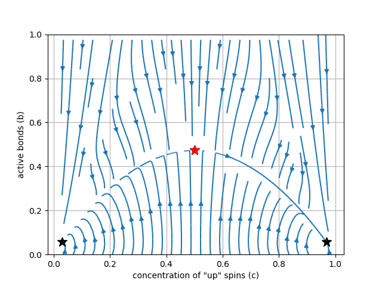
\(T<T_{c}^{(1)}\): stable FM, unstable PM
\(T_{c}^{(1)}<T<T_{c}^{(2)}\)
\(T>T_{c}^{(2)}\)
ferromagnetic (FM) and paramagnetic (PM) f.p.
\(q=4\), \(\langle k \rangle =20\), \(T=1.95\)
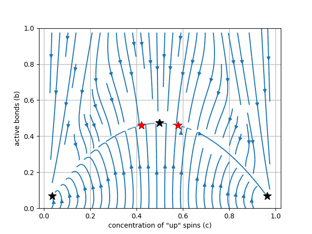
\(T<T_{c}^{(1)}\): stable FM, unstable PM
\(T_{c}^{(1)}<T<T_{c}^{(2)}\): bistability (both FM and PM points stable)
\(T>T_{c}^{(2)}\)
ferromagnetic (FM) and paramagnetic (PM) f.p.
\(q=4\), \(\langle k \rangle =20\), \(T=2.20\)
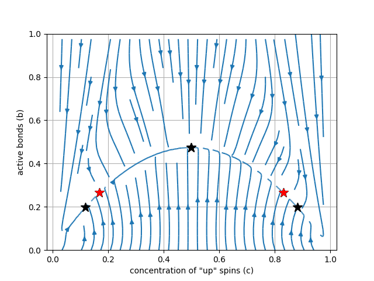
\(T<T_{c}^{(1)}\): stable FM, unstable PM
\(T_{c}^{(1)}<T<T_{c}^{(2)}\): bistability (both FM and PM points stable)
- \(T>T_{c}^{(2)}\): stable PM, no FM points
ferromagnetic (FM) and paramagnetic (PM) f.p.
\(q=4\), \(\langle k \rangle =20\), \(T=2.25\)
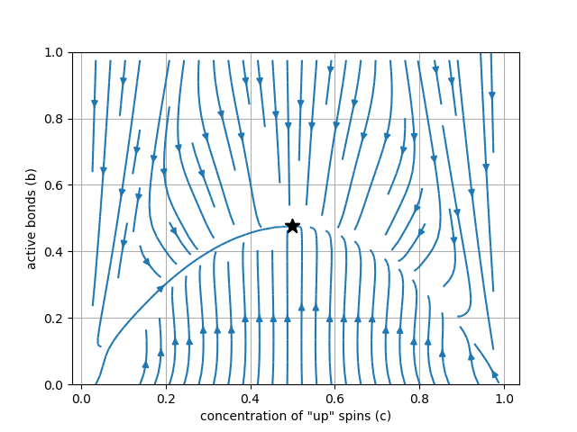
\(T<T_{c}^{(1)}\): stable FM, unstable PM
\(T_{c}^{(1)}<T<T_{c}^{(2)}\): bistability
\(T>T_{c}^{(2)}\): stable PM, no FM points
Subcritical pitchfork bifurcation
Continous and discontinous phase transitions
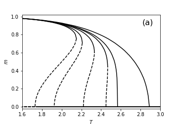
\(q=4\)
\(\langle k \rangle =50, 20, 10, 7, 6, 4\)

\(q=5\)
\(\langle k \rangle=1000, 100, 50, 20, 10, 5\)
Comparison with Monte-Carlo simulations
\(q=4\)
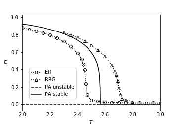
\(\langle k \rangle = 6\)
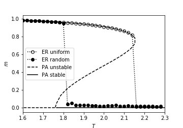
\(\langle k \rangle = 40\)
The same results for ERG, RRG and SF networks with \(\gamma \geq 3\).
“Oscillating hysteresis” effect
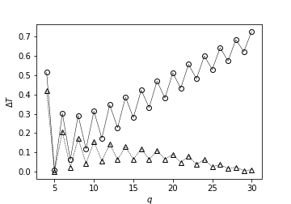
Width of the hysteresis loop, \(\Delta T\) vs. \(q\), \(\langle k \rangle = 50\) (triangles) and \(\langle k \rangle = 1000\) (circles).
PA for q-Ising model …
… works for:
- Erdős–Rényi graphs
- random regular graphs
- scale-free graphs with \(\gamma \geq 3\)
… does not work for:
- scale-free graphs with \(\gamma \lt 3\)
Multiplex generalization
Pair approximation for duplex network
Two fully overlapping networks (layers) \(A\) and \(B\) with joint degree distribution \(P\left( k^{(A)}, k^{(B)}\right)\).
One concentration \(c\), but two different active bond concentrations \(b^{(A)}\) and \(b^{(B)}\).
Spin flip rate: \(f_{k^{(A)},k^{(B)}}\left( i^{(A)},i^{(B)},q,\hat{p}\right)\)
I apologize for the next slide 😔
\[ \frac{\partial c}{\partial t} = \gamma^{+}-\gamma^{-} \]
\[ \frac{\partial b^{(A)}}{\partial t} = \frac{2}{\langle k^{(A)}\rangle} \sum_{j\in \left\{ \uparrow,\downarrow\right\}} c_{j} \sum_{k^{(A)},k^{(B)}} P\left( k^{(A)}, k^{(B)}\right) \]
\[ \times \sum_{i^{(A)}=0}^{k^{(A)}} \sum_{i^{(B)}=0}^{k^{(B)}} B(i^{(A)}, k^{(A)}, \theta_{j}^{(A)}) B(i^{(B)}, k^{(B)}, \theta_{j}^{(B)}) \]
\[ \times f_{k^{(A)},k^{(B)}}\left( i^{(A)},i^{(B)},q,\hat{p}\right) \left( k^{(A)}-2i^{(A)}\right) \]
… and a complementary equation for \(b^{(B)}\).
LOCAL vs. GLOBAL
Multiplex generalization. LOCAL&AND vs. GLOBAL&AND.
A. Chmiel, K. Sznajd-Weron, Phys. Rev. E 92, 052812 (2015)
LOCAL&AND
Check the result of the spin-flip rule on each layer (for local \(q\)-panels from all the layers)
If the results are consistent, apply the rule
GLOBAL&AND
Create one global panel consisting neighbors from all the layers (\(q\) neighbors from each layer)
- Apply the spin-flip rule for the global panel
PA for LOCAL&AND dynamics
\[ f_{k^{(A)},k^{(B)}}\left( i^{(A)},i^{(B)},q,\hat{p}\right)= f_{k^{(A)}}\left( i^{(A)},q,\hat{p}\right) f_{k^{(B)}}\left( i^{(B)},q,\hat{p}\right) \]
for q-Ising:
\[ f_{k^{(A)}}\left( i^{(A)},q,T\right) = \]
\[ = \frac{1}{{k^{(A)} \choose i}} \sum_{l=0}^{q} {k^{(A)}-q \choose i^{(A)}-l} {q \choose l} \min \left(1, e^{ -2\beta J(q-2l)}\right) \]
… and similar formula for \(f_{k^{(B)}}\left( i^{(B)},q,T\right)\)
Flip rates for q-Ising model
\[ \gamma^{+} = (1-c) \left[ \sum_{l=0}^{q} B(l, q, \theta^{(A)}_{\downarrow}) \min \left(1, e^{ -2\beta J(q-2l)}\right) \right] \]
\[ \times \left[ \sum_{l^{\prime}=0}^{q} B(l^{\prime}, q, \theta^{(B)}_{\downarrow}) \min \left(1, e^{ -2\beta J(q-2l^{\prime})}\right) \right] \]
… and similar formula for \(\gamma^{-}\).
Too muh equationz!!! 😫
Simple case. Homoduplex? 😕
We consider two fully overlapping layers with the same topologies: \(P(k^{(A)})=P(k^{(B)})\). Then: \(\langle k^{(A)} \rangle=\langle k^{(B)} \rangle\).
Due to symmetry of the \(\dot b^{(A)}\) and \(\dot b^{(B)}\) rates:
- \(\theta_{j}^{(A)} =\theta_{j}^{(B)} =\theta_{j}\) \(\quad \quad j\in \left\{ \uparrow,\downarrow\right\}\)
- \(b^{(A)} = b^{(B)} = b\)
LOCAL&AND
I’m sorry…
\[ \frac{\partial b^{(A)}}{\partial t} = \frac{2}{\langle k^{(A)}\rangle} \sum_{j\in \left\{ \uparrow,\downarrow\right\}} c_{j} \]
\[ \times \sum_{l=0}^{q} B(l, q, \theta_{j}^{(A)}) \left[ \langle k^{(A)}\rangle -2 \left( \langle k^{(A)}\rangle -q\right) \theta_{j}^{(A)} -2l\right] \min \left(1, e^{ -2\beta J(q-2l)}\right) \]
\[ \times \sum_{l^{\prime}=0}^{q} B(l^{\prime}, q, \theta_{j}^{(B)}) \min \left(1, e^{ -2\beta J(q-2l^{\prime})}\right) \]
LOCAL&AND
\(q=6..2\), \(k=50\)
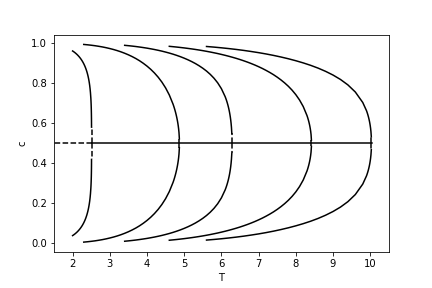
LOCAL&AND
Some boring plots
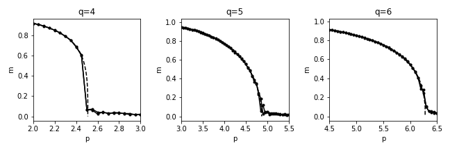
Example result for scale-free network \((\gamma=3)\), \(\langle k \rangle =50\) The same results for higher values of \(\gamma\), ERG and RRG.
GLOBAL&AND
The equations obtained for the GLOBAL&AND duplex dynamics are in complete agreement with those for monoplex with \(q ^\prime = 2q\) and \(\langle k ^\prime \rangle = 2 \langle k \rangle\)
Don’t run!
No more equations!
GLOBAL&AND
\(q=2\) , \(\langle k \rangle=2..6\)
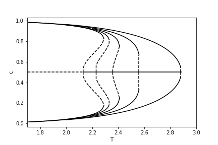
Example for \(q=2\) , \(\langle k \rangle = 50\)
…but it doesn’t work for scale-free networks with small \(\gamma\).
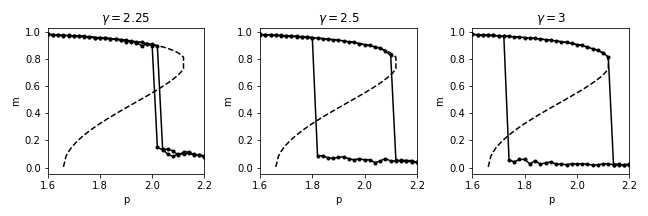
What’s next? 🤔
Let’s solve 150’000 differential equations!
Heterogeneous approximation: Gleeson equations
J.P. Gleeson, Binary-State Dynamics on Complex Networks: Pair Approximation and Beyond, Phys. Rev. X 3 (2013)
- done for \(q\)-voter model
- great agreement with MC results for ERR, RRG and SF with \(\gamma \geq 3\)
- poor agreement for SF with \(\gamma < 3\)
- possible solution for partially overlapping layers
Conclusions
- Pair approximation gives valid results for a wide range of topologies
- … but not sufficient for scale-free networks with \(\gamma< 3\)
- possible multiplex generalization
References
A. Chmiel, T. Gradowski, A. Krawiecki, Int. J. of Mod. Phys. C 29, 1850041 (2018) (doi)
T. Gradowski, A. Krawiecki, Pair approximation for multiplex networks (in preparation)
A. Jędrzejewski, A. Chmiel, K. Sznajd-Weron, Phys. Rev. E 92, 052105 (2015)
A. Chmiel, K. Sznajd-Weron, Phys. Rev. E 92, 052812 (2015)
A. Jędrzejewski, Phys. Rev. E 95, 012307 (2017)
J.P. Gleeson, Phys. Rev. X 3, 021004 (2013)
Slides background: github.com/VincentGarreau/particles.js